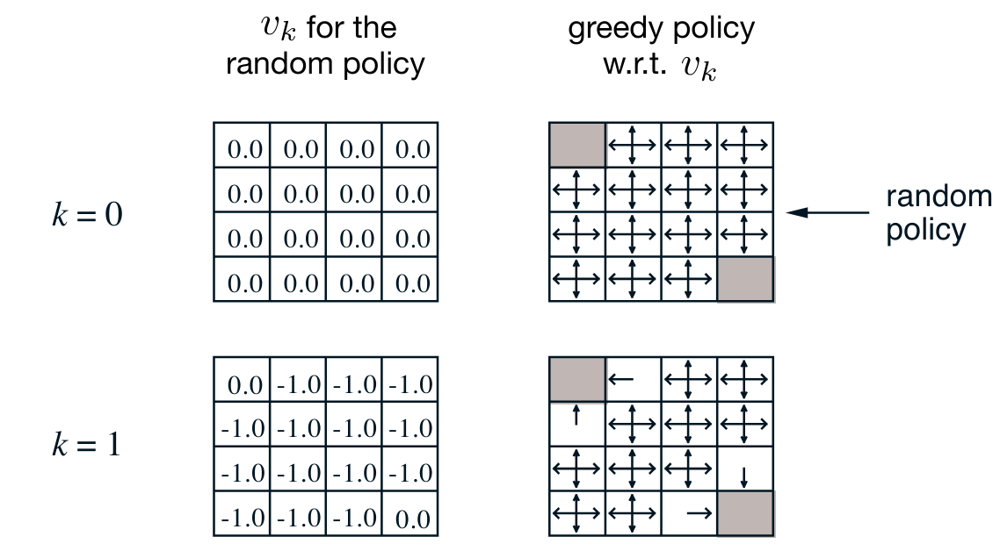
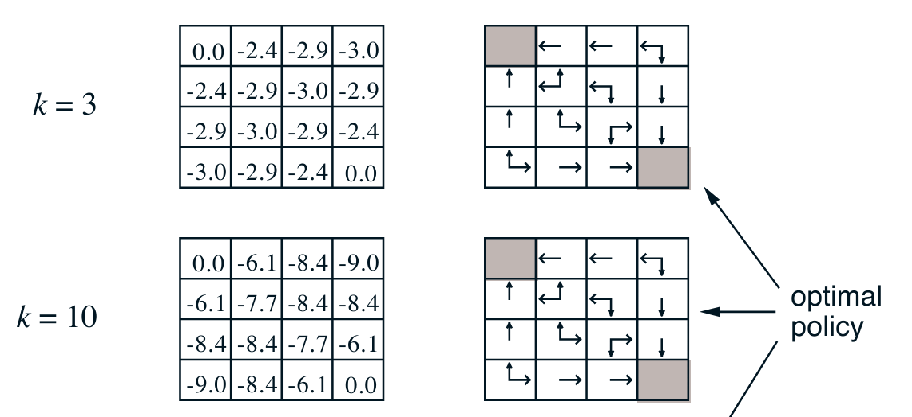
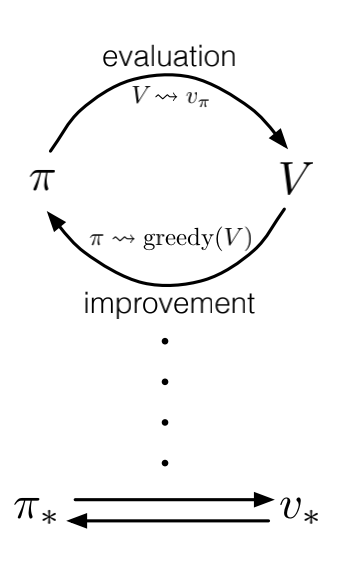

Week 4: Dynamic Programming
In this week, we learn how to compute value functions and optimal policies, assuming you have the MDP model. You will implement dynamic programming to compute value functions and optimal policies and understand the utility of dynamic programming.
The ‘programming’ in dynamic programming really means solving an optimization problem. We have learned about using the Bellman equations as update rules. Now we look at some basic applications of this idea to solve MDP.
The intuition is pretty simple we have two tasks - one is to decide how good a policy \pi is - think discounted summation of the rewards from the best actions over the s_ta_tr_t tree. This policy evaluation step is named prediction, as we don’t really know what the actual rewards of stochastic actions will be, only their expectation. But what we really want is to find near optimal policy which is called ‘control’. We have a strong theoretical result on how to go about this by iteratively improving a policy by picking its the actions with highest value at each steps.
What is surprising at first is that even starting with a uniform random policy we don’t need to explore the tree too deeply in the prediction step to be able to pick better actions. Also we can see from the maze like grid world that we really need to update one or two states every iteration. Which suggest that there is great room for improvement with smarter algorithms.
Lesson 1: Policy Evaluation (Prediction)
Policy Evaluation and Control
The distinction between policy evaluation and control:
- policy evaluation (prediction)
- is the task of evaluating the future, i.e. the value function given some specific policy \pi.
- control
- is the task of finding the optimal policy, given some specific value function v.
- planning
- is the task of finding the optimal policy \pi_{\star} and value function v, given a model of the environment. this is typically done by dynamic programming methods.
Typically we need to solve the prediction problem before we can solve the control problem. This is because we need to know the value of the states under the policy to be able to pick the best actions.
Dynamic Programming
- Dynamic programming is a method for solving complex problems by breaking them down into simpler sub-problems.
- It is a general approach to solving problems that can be formulated as a sequence of decisions.
- Dynamic programming can be applied to problems that have the following properties:
- Optimal substructure: The optimal solution to a problem can be obtained by combining the optimal solutions to its sub-problems.
- Overlapping sub-problems: The same sub-problems are solved multiple times.
Iterative Policy Evaluation Algorithm
Continuing with our goal of finding the optimal policy, we now turn to the an algorithms that will allow us to predict the value all the state starting with even the most naive policy.
The iterative policy evaluation algorithm is a simple iterative algorithm that estimates the value function for a given policy \pi.
We start with no knowledge of the value function or the policy. We set all the values to zero and we may even assume all actions are equally likely and all states are equally good. This is the uniform random policy. Alternatively we can start with some other policy.
These two assumptions are implemented in the initialization step of the algorithm.
The crux of the algorithm is the update step which is based on the recursive bellman equation for the value function under a policy \pi:
v_{\pi}(s) = \sum_{s',r} p(s',r|s,a)[r + \gamma V(s')] \sum_{a} \pi(a|s) I rearranged the terms to make it clear that we are iterating over the states we use this equation to update the value of each state using
- the four part dynamics function p(s',r|s,a) to get the probability of receiving a reward r at a successor state s' given the current state s and action a.
- the value of the next state V(s'). which we initially assumed is 0 and may have already updated
- the policy \pi(a|s) which we use to weigh the previous term
Al this will give us the expected value of the state under the policy \pi.
The final part of the algorithm is the stopping condition. We stop when the change in the value function is less than a small threshold \theta.
The algorithm is guaranteed to converge to the value function for the policy \pi.
Here is the concise statement of the algorithm with just one array in pseudo code:
note: the algorithm makes a couple of assumptions that are omitted in the pseudo code.
- that we have access to the dynamics function p(s',r|s,a)
- that we have access to the reward function r(s,a,s')
Applying Iterative Policy Evaluation
The iterative policy evaluation algorithm can be applied to compute the value function for a given policy \pi.
Lesson 2: Policy Iteration (Control)
Policy Improvement Theorem
The policy improvement theorem states that given a policy \pi and the value function v_{\pi}, we can construct a new policy \pi' that is as good as or better than \pi.
Value Function for a Policy
The value function for a policy \pi is the expected return when starting in state s and following policy \pi thereafter.
The value function for a policy \pi is denoted by v_{\pi}(s).
v_{\pi}(s) = \mathbb{E}[G_t \vert S_t = s]
where G_t is the return at time t and S_t is the state at time t.
Policy Iteration Algorithm
The policy iteration algorithm is a simple iterative algorithm that alternates between policy evaluation and policy improvement.
The algorithm starts with an initial policy \pi and iteratively evaluates the policy to get the value function v_{\pi} and then improves the policy to get a new policy \pi'.
The algorithm continues this process until the policy no longer changes, which indicates that the optimal policy has been found.
\pi_0 \xrightarrow{\text{Evaluation}} v_{\pi_0} \xrightarrow{\text{Improvement}} \pi_1 \xrightarrow{\text{Evaluation}} v_{\pi_1} \xrightarrow{\text{Improvement}} \ldots \pi_* \xrightarrow{\text{Evaluation}} v_{\pi_*}


Suppose we have computed for a deterministic policy v_{\pi}, the value function for a deterministic policy \pi.
Now when would it be better to prefer some action ? a ≠ \pi(s)? in some state s?
It is better to switch to action a for state s if and only if: q_{\pi}(s,a) > v_{\pi}(s) \tag{1}
where q_{\pi}(s,a) is the value of taking action a in state s and then following policy \pi.
And, we can compute q_π (s,a) from v_π by:
q_{\pi}(s,a) = \sum_{s',r} p(s',r|s,a)[r + \gamma v_{\pi}(s')] \tag{2}
this is the the key step the policy improvement step of the policy iteration algorithm.
Value Iteration
Value iteration is an important example of Generalized Policy Iteration. It is an iterative algorithm that computes the optimal value function and the optimal policy for a given MDP but it does not directly referrence a particular policy.
In value iteration, the algorithm starts with an initial estimate of the value function and iteratively runs a single step of greedy polict evaluation per step, using the greedy value to update the state-value function.
updates the value function until it converges to the optimal value function.
The Dance of Policy and Value

The policy iteration algorithm is called the dance of policy and value because it alternates between policy evaluation and policy improvement. The policy evaluation step computes the value function for the current policy, and the policy improvement step constructs a new better greedyfied policy based on the value function.
This is also true for other generalized policy iteration algorithms, such as value iteration, which alternates between policy evaluation and policy.
Lesson 3: Generalized Policy Iteration
Generalized Policy Iteration
Generalized policy iteration is a framework for solving reinforcement learning problems that combines policy evaluation and policy improvement in a single loop. The idea is to alternate between evaluating the policy and improving the policy until the policy converges to the optimal policy.
Value Iteration
Value iteration is an important example of generalized policy iteration. It is an iterative algorithm that computes the optimal value function and the optimal policy for a given MDP. The algorithm starts with an initial estimate of the value function and iteratively updates the value function until it converges to the optimal value function.
Synchronous and Asynchronous Dynamic Programming
Synchronous dynamic programming methods update all states in the MDP in each iteration, while asynchronous dynamic programming methods update only a subset of states in each iteration. Synchronous dynamic programming methods are typically slower than asynchronous dynamic programming methods, but they are guaranteed to converge to the optimal policy.
Brute Force Search
Brute force search is an alternative method for searching for an optimal policy. It involves exploring all possible policies and selecting the policy that maximizes the expected return. Brute force search is computationally expensive and is not practical for large MDPs.
Monte Carlo
Monte Carlo is an alternative method for learning a value function. It involves estimating the value function by sampling returns from the environment. Monte Carlo is computationally expensive and is not practical for large MDPs.
Advantage of Dynamic Programming
Dynamic programming and bootstrapping are more efficient than brute force search and Monte Carlo for finding the optimal policy. Dynamic programming and bootstrapping exploit the structure of the MDP to update the value function iteratively, while brute force search and Monte Carlo do not.
Warren Powell: Approximate dynamic programming for fleet management
In this lecture Warren Powell talks about the application of dynamic programming to fleet management.
We want to calculate the marginal value of a single driver.
This is a linear programming problem, solvable by Gurobi and cplux.
For each driver, we drop them out of the system and calculate the system’s new value.
The difference in values between the original and driver dropped value is the value of the driver.